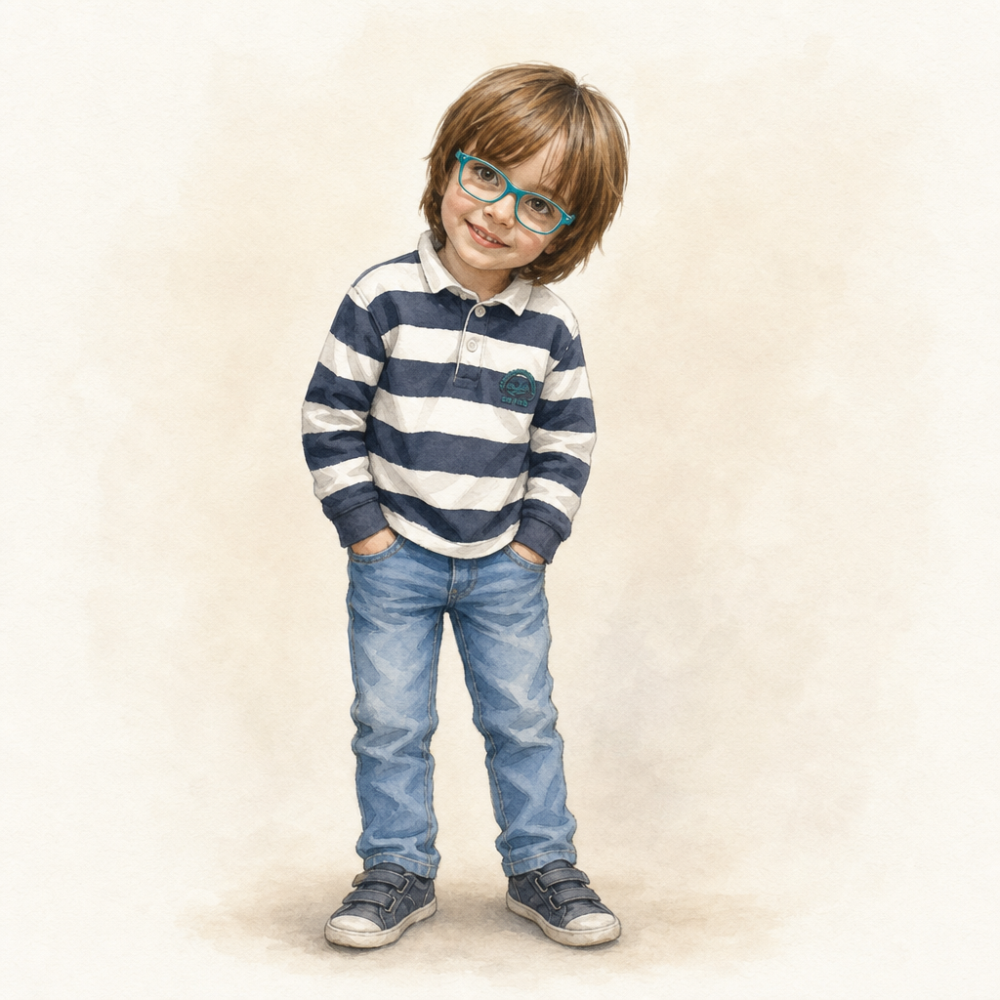
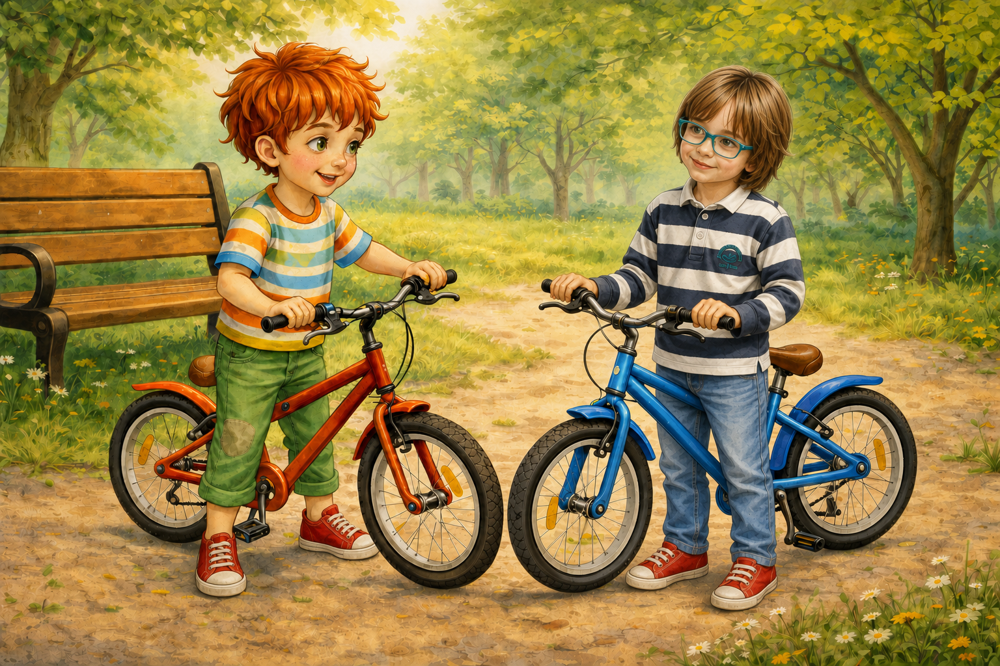
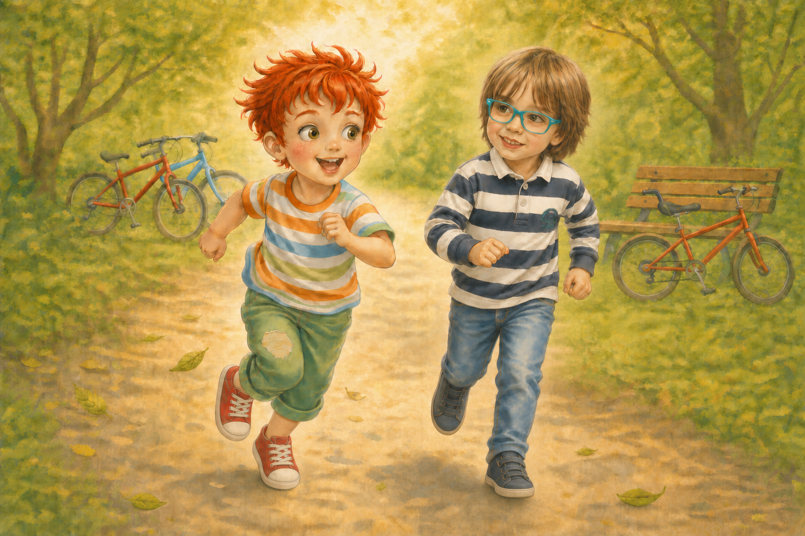
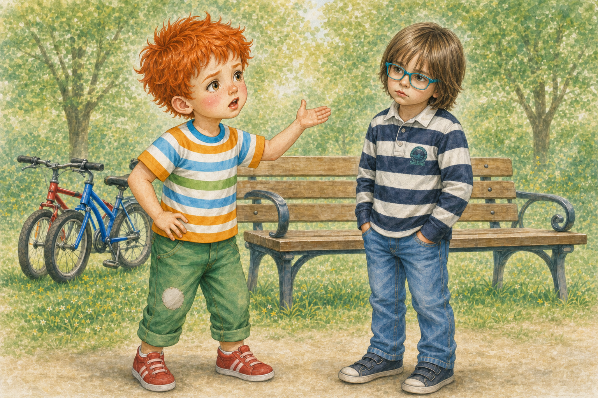
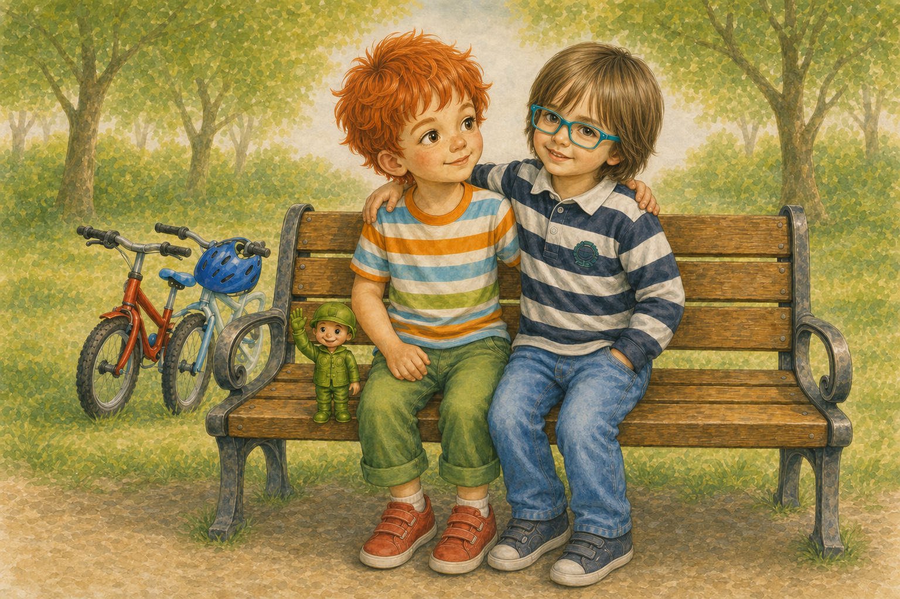

Палавко и Камен са приятели

В един слънчев следобед Палавко изкара синьото си колело пред блока.
То блестеше така, сякаш току-що беше измито от облаче.
- Днес ще карам най-бързо! - обяви Палавко и натисна звънчето. - Дрън-дрън! Път за шампиона!
Точно тогава по алеята се появи едно момче с усмивка, рошава коса и шарени панталонки. Казваше се Камен.
Камен караше своето колело спокойно. Не бързаше. Не викаше. Само гледаше напред и завиваше внимателно около локвите.
- Хей! - извика Палавко. - Искаш ли да се състезаваме?
- Може - каза Камен. - Но първо да видим дали няма малки деца по алеята.
Палавко примигна. Той не беше мислил за това.
- Добре де - каза той. - Но после ще видиш кой е по-бърз!
Двамата стигнаха до широката част на алеята. Там нямаше никого, само няколко листа, една пейка и Рико, който стоеше до бордюра и много сериозно наблюдаваше.
- На три! - каза Палавко. - Едно, две...
- Чакай - спря го Камен. - Ако искаш, можем първо да си разменим колелата.
- Защо?
- За да е честно. И за да видим дали можем да пазим чуждото, както пазим своето.
Палавко погледна колелото на Камен. После погледна своето.
Не беше много сигурен, че иска някой друг да кара синьото му колело.
Но пък звучеше интересно.
- Добре - каза той. - Само без драскотини!
Двамата си размениха колелата. Палавко се качи на колелото на Камен и веднага натисна педалите.
- Юхууу!
Камен се качи на синьото колело на Палавко и потегли след него.
Първо Палавко беше отпред. После Камен го настигна. После Палавко пак излезе напред. После едно листо прелетя пред носа му и той едва не се разсмя толкова силно, че забрави да върти педалите.
Камен го изпревари.
- Хей! - извика Палавко. - Това не се брои! Моето колело е по-бавно, когато не го карам аз!

Камен спря и се усмихна.
- Може би колелото не е най-важното - каза той.
- А кое?
- Да караш внимателно. И да не се сърдиш, когато някой е по-бърз.
Палавко не отговори. Само слезе от колелото и каза:
- Добре. Тогава да видим кой тича по-бързо!
Оставиха колелата до пейката и застанаха на стартовата линия, която Рико начерта с пръчка.
- Готови! - извика Рико. - Старт!
Палавко хукна като ракета. Камен тичаше до него, леко и спокойно. Двамата стигнаха до голямото дърво почти едновременно.
- Аз бях пръв! - извика Палавко.

- Мисля, че бяхме заедно - каза Камен.
- Не! Аз бях! И освен това моят батко е по-силен от твоя!
Камен се намръщи.
- А моят батко може да вдигне цяла раница с камъни!
- А моят може да вдигне две!
- А моят може да вдигне три!
- А моят може да вдигне цял автобус! - извика Палавко.
Камен го погледна. Вече не му беше смешно.
- Палавко, това не е игра, ако все трябва да доказваш, че си повече от другия.
Палавко отвори уста да каже нещо още по-голямо. Може би за влак. Или за ракета. Или за батко, който вдига планина.

Но думите на Камен останаха в главата му.
"Не е игра, ако все трябва да доказваш, че си повече от другия."
Палавко погледна Камен.
Камен не се караше, за да победи. Камен просто казваше истината.
Рико тихо се приближи и прошепна:
- Понякога най-силният не е този, който вика най-много.
Палавко наведе очи към обувките си. Едното му чорапче беше на райета, другото със звезди. Изведнъж му се сториха много важни за гледане.
- Аз май развалих играта - каза той.
Камен сви рамене.
- Можем да я поправим.
- Как?
- Като измислим игра, в която сме от един отбор.
Това вече прозвуча интересно.
Двамата взеха колелата и решиха да направят най-трудната мисия на света: да обиколят алеята, без да настъпят нито една пукнатина, да поздравят всяко дърво и да стигнат до пейката едновременно.
Палавко караше по-бавно.
Камен го изчакваше, когато трябваше.
Палавко изчакваше Камен, когато Камен спираше да премине около камъче.
Когато стигнаха до пейката, не извикаха "Аз победих!".
Извикаха:
- Ние успяхме!
После седнаха един до друг и си размениха по една глътка вода.
- Камене - каза Палавко, - май приятелството не е състезание.

- Не е - усмихна се Камен. - Но може да бъде приключение.
Палавко се засмя.
- Тогава утре пак ли ще играем?
- Само ако не караш чуждото колело като ракета.
- Добре - каза Палавко. - Ще го карам като... внимателна ракета.
Камен се засмя толкова силно, че Рико почти падна от бордюра.
А вечерта Палавко разказа на мама:
- Днес с Камен се състезавахме, скарахме се, после пак станахме приятели.
- И какво научи? - попита мама.
Палавко помисли малко.
- Че приятелят не е човек, когото трябва да победиш. Приятелят е човек, с когото искаш да стигнеш до финала заедно.
И този път мама не каза нищо.
Само го прегърна.
Поука: Истинското приятелство не започва, когато винаги побеждаваме, а когато се научим да слушаме, да се извиняваме и да продължаваме заедно.